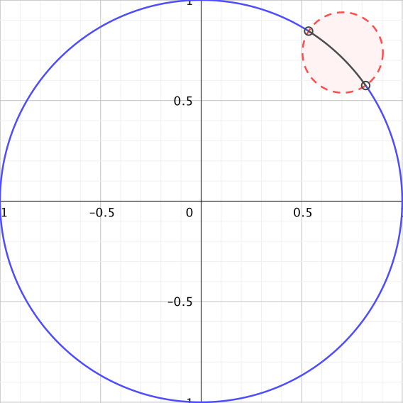

Suppose \(X\) is a topological space and \(Y\) is a set, and let \(p: X \to Y\) be a surjection. We can define a relation \(\sim_p\) on \(X\) by \(x \sim_p y\) if and only if \(p(x) = p(y)\text{.}\) It is straightforward to show that \(\sim_p\) is an equivalence relation, the details are left for Exercise 1. From this we can see that our two approaches to defining the quotient topology and quotient spaces are really the same.
Oftentimes we have a topological space \(X\) and a relation \(\sim\) on \(X\text{,}\) and we would like to have an effective way to be able to identify the quotient space \(X/\ssim\) as homeomorphic to some familiar topological space \(Y\text{.}\) That is, we want to be able to show that there is a homeomorphism \(f\) from \(X/\ssim\) to \(Y\text{.}\)
Example16.7.
Consider the following situation. Let \(X = \R\) with the standard topology and define the relation \(\sim\) on \(\R\) by \(x \sim y\) if \(x - y \in \Z\text{.}\) It is straightforward to show that \(\sim\) is an equivalence relation. By this equivalence relation, we have \(x-1 \sim x\) for every real number \(x\text{.}\) This identifies \(\R\) with the interval \([0,1]\text{,}\) where \(0\) and \(1\) are identified under the relation. So we might expect that \(\R/\ssim\) is homeomorphic to the circle \(S^1 = \{(x,y) \in \R^2 \mid x^2+y^2 = 1\}\) as a subspace of \(\R^2\) with the standard topology. Now the objective is to find a homeomorphism between \(S_1\) and \(\R/\ssim\text{.}\) Since every point on the unit circle has the form \((\cos(t), \sin(t))\) for some real number \(t\text{,}\) we might try defining \(f: (\R/\ssim) \to S^1\) by \(f([t]) = (\cos(t), \sin(t))\text{.}\) However, we have that \(0 \sim 1\text{,}\) which means that \([0] = [1]\text{,}\) but \(f([0]) \neq f([1])\) and so \(f\) is not well-defined. Another option might be \(f([t]) = (\cos(2 \pi t), \sin(2 \pi t))\text{.}\) In this case, if \(x \sim y\text{,}\) then \(2 \pi x\) and \(2 \pi y\) differ by a multiple of \(2 \pi\) and so \(f([x]) = f([y])\text{.}\) We could then show that \(f\) is a homeomorphism. We will continue this example shortly.
The following theorem encapsulates the above example.
Theorem16.8.
Let \(X\) and \(Y\) be sets and let \(\sim\) be an equivalence relation on \(X\text{.}\) Let \(f\) be a function from \(X\) to \(Y\) such that \(f(x_1) = f(x_2)\) whenever \(x_1 \sim x_2\) in \(X\text{.}\) Let \(X/\ssim\) be the set of equivalence classes of \(X\) under the relation \(\sim\text{,}\) and let \(p: X \to (X/\ssim)\) be the standard map defined by \(p(x) = [x]\text{.}\) The function \(\overline{f}\) mapping \(X/\ssim\) to \(Y\) defined by \(\overline{f}([x]) = f(x)\) for every \(x \in X\) is the unique function that satisfies
\begin{equation*}
f = \overline{f} \circ p\text{.}
\end{equation*}
Activity16.6.
Theorem 16.8 is a statement about sets and functions, and there is no topology involved. We prove the theorem in this activity. Use the conditions stated in Theorem 16.8.
(a)
Show that \(\overline{f}\) is well-defined. That is, show that whenever \([x_1] = [x_2]\) in \(X/\ssim\text{,}\) then \(\overline{f}([x_1]) =\overline{f}([x_2])\text{.}\)
(b)
Prove that \(f = \overline{f} \circ p\text{.}\)
(c)
Show that the uniqueness of \(\overline{f}\) comes from the equation \(f = \overline{f} \circ p\text{.}\)
Now we present a final result that can be very helpful when working with quotient spaces.
Theorem16.9.
Let \(X\) be a topological space and let \(\sim\) be an equivalence relation on \(X\text{.}\) Consider the set \(X/\ssim\) to be a topological space with the quotient topology, and let \(p: X \to (X/\ssim)\) be the standard surjection defined by \(p(x) = [x]\text{.}\) Let \(Y\) be a topological space with \(f: X \to Y\) a continuous function such that \(f(x_1) = f(x_2)\) whenever \(x_1 \sim x_2\) in \(X\text{.}\) Then \(\overline{f} : (X/\ssim) \to Y\) defined by \(\overline{f}([x]) = f(x)\) is the unique continuous function satisfying \(f = \overline{f} \circ p\text{.}\)
Proof.
The existence of \(\overline{f}\) as the unique function satisfying \(f = \overline{f} \circ p\) was established in Theorem 16.8. All that remains is to show that \(\overline{f}\) is continuous. Let \(O\) be an open set in \(Y\text{.}\) Since \(f\) is continuous, we know that \(f^{-1}(O)\) is open in \(X\text{.}\) If \(x_1 \in f^{-1}(O)\) and \(x_1 \sim x_2\text{,}\) then \(x_2 \in f^{-1}(O)\) as well. Thus, we can write \(f^{-1}(O)\) as
That is, \(f^{-1}(O)\) is a union of equivalence classes. Now \(\overline{f}([x]) = f(x)\text{,}\) so if \(x \in f^{-1}(O)\text{,}\) then \([x] \in \overline{f}^{-1}(O)\text{.}\) Thus,
We conclude that \(\overline{f}^{-1}(O)\) is open in \(X\) and \(\overline{f}\) is continuous.
Now we will see how to use Theorem 16.9 to establish a homeomorphism from a quotient space of a given topological space to another topological space
Example16.10.
We return to the situation from Example 16.7 with \(X = \R\) under the standard topology and equivalence relation \(\sim\) defined by \(x \sim y\) if \(x - y \in \Z\text{.}\) We will use Theorem 16.9 to show that \(\R/\ssim\) is homeomorphic to the circle \(Y = S^1\text{.}\)

Figure16.11.A basis element for \(S^1\text{.}\)
Step 1
Define a continuous surjection \(f: X \to Y\) that respects the relation. That is, we need to ensure that \(f(x_1) = f(x_2)\) whenever \(x_1 \sim x_2\) in \(X\text{.}\) We saw earlier that the function \(f\) defined by \(f(t) = (\cos(2 \pi t), \sin(2 \pi t))\) respects the relation. Since every point on the unit circle is of the form \((\cos(\theta), \sin(\theta))\) for some real number \(\theta\text{,}\) choosing \(t = \frac{\theta}{2 \pi}\) makes \(f(t) = (\cos(\theta), \sin(\theta))\) and \(f\) is a surjection. Now we need to demonstrate that \(f\) is continuous. A collection of basic open sets in \(S^1\) can be found by intersecting \(S^1\) with open balls in \(\R^2\) as illustrated in Figure 16.11. We can see that the basic open sets are arcs of the form \(\overparen{ab}\) for \(a\) and \(b\) in \(S^1\text{.}\) Suppose \(a = (\cos(2 \pi A), \sin(2 \pi A))\) and \(b = (\cos(2 \pi B), \sin(2 \pi B))\) for angles \(A\) and \(B\text{.}\) Then \(f^{-1}(\overparen{ab})\) is the union of intervals \((A+2\pi k, B+2 \pi k)\) for \(k \in \Z\text{.}\) As a union of open intervals, we have that \(f^{-1}(\overparen{ab})\) is open in \(X\text{.}\) We have now found a continuous surjection from \(X\) to \(Y\) that respects the relation.
Step 2
Find a continuous function from \(X/\ssim\) to \(Y\text{.}\)Theorem 16.9 tells us that the function \(\overline{f} : (X/\ssim) \to Y\) defined by \(\overline{f}([t]) = f(t)\) is continuous. So \(\overline{f}\) is our candidate to be a homeomorphism.
Step 3
Show that \(\overline{f}\) is a bijection. Let \(y \in Y\text{.}\) The fact that \(f\) is a surjection means that there is a \(t \in \R\) such that \(f(t) = y\text{.}\) It follows that \(\overline{f}([t]) = f(t) = y\) and \(\overline{f}\) is a surjection. To demonstrate that \(\overline{f}\) is an injection, suppose \(\overline{f}([s]) = \overline{f}([t])\) for some \(s,
t \in \R\text{.}\) Then \((\cos(2 \pi s), \sin(2 \pi s)) = f(s) = f(t) = (\cos(2\pi t), \sin(2 \pi t))\text{.}\) It must be the case then that \(2 \pi s\) and \(2 \pi t\) differ by a multiple of \(2 \pi\text{.}\) That is, \(2 \pi s - 2 \pi t = 2 \pi k\) for some integer \(k\text{.}\) From this we have \(s - t = k \in \Z\text{,}\) and so \(s \sim t\text{.}\) This makes \([s] = [t]\) and we conclude that \(\overline{f}\) is an injection.
Step 4
Show that \(\overline{f}\) is a homeomorphism. At this point we already know that \(\overline{f}\) is a continuous bijection, so the only item that remains is to show that \(\overline{f}(\overline{O})\) is open whenever \(\overline{O}\) is open in \(X/\ssim\text{.}\) Let \(p: X \to (X/\ssim)\) be the standard map. Let \(\overline{O}\) be a nonempty open set in \(X/\ssim\text{.}\) Then \(O = p^{-1}(\overline{O})\) is open in \(X\text{.}\) Thus, \(O\) is a union of open intervals. Let \((a,b)\) be an interval contained in \(O\text{.}\) From the definition of \(f\) we have that \(f(a,b)\) is the open arc \(\overparen{f(a)f(b)}\text{,}\) which is open in \(Y\text{.}\) So \(f(O)\) is a union of open arcs in \(Y\text{,}\) which makes \(f(O)\) open in \(Y\text{.}\) Now \(f(O) = (\overline{f} \circ p)(O) = \overline{f}(p(O)) = \overline{f}(\overline{O})\text{,}\) and \(\overline{f}(\overline{O})\) is open in \(Y\text{.}\) We conclude that \(\overline{f}\) is a homeomorphism from \(X/\ssim\) to \(S^1\text{,}\) and so \(S^1\) is a quotient space of \(\R\text{.}\)